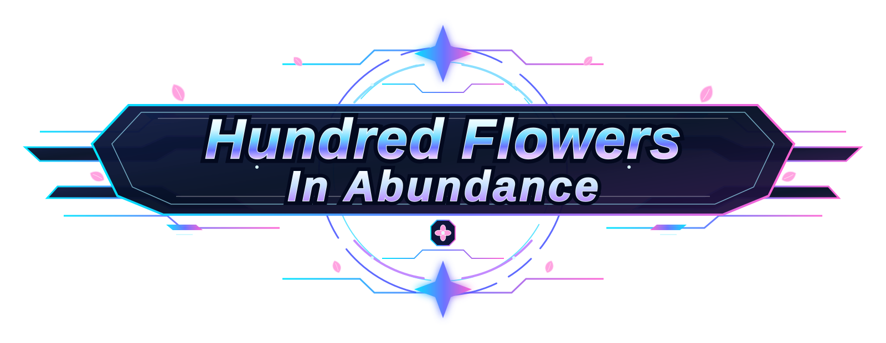

・ChatGPT ・Gemini ・Grok ・DolaAI ・Claude ・Openhands ・genspark ・Copilot ・Qwen ・Perprexity ・GoogleAI ・Vide ・notion ・NotebookLM ・Udio ・Suno ・Pixabay ・Treblo
・匿名Dio ・朝比奈カイト ・乖離 ・小林倖斗
＊OP＊ 英名：Columns of Thunder 和名：雷撃縦隊 大日中帝国連邦 第1軍歌 雷撃縦隊行進曲 ＊挿入歌１＊ 露名：Стальной рассвет 和名：鋼鉄の夜明け ソヴィリス空上連邦 第3軍歌 рассвет(和名：夜明軍隊)特攻行進曲 ＊ED＊ 独名：Krieger im Schatten 和名：闇の中の戦士 神聖ロジャスメア帝国 聖歌 ＊ED2＊ 伊名：La Marcia dell'Alba Gelata 和名：凍てついた夜明けの行進 新龍崇イトゥークリア共和国 国歌
本作に登場する人物・団体・国家は、架空のものであり、 また、作中の表現に、政治的な意味合いはございません。 ご理解いただけますよう、お願いいたします。
ーーー「我らは、一心不乱に戦場を駆け、敵を討つッ！」
ーーー「徹底的に大日中帝国を叩け！奴らは我が足元にも及ばぬッ！」

A:百花繚乱って意味です
Rhythmos Studio - 伊切里緒 - age: 14 name: 伊切里緒 furi: ikiri rio h-name: 匿名配達 Rhythmos Studio - 朝凪姫緒 - age: 15 name: 朝凪姫緒 furi: asanagi nio h-name: ku6neko3 Rhythmos Studio - Grin - age: 15 name: Grin h-name: Glitch Rhythmos Studio - Rao - age: 13 name: wamuu rao h-name: kaduki Rhythmos Studio - Valsa - age: 17 name: Valsa Engrid h-name: ヴァルサ砲 Rhythmos Studio - Veris - age: 14 name: Veris Engrid h-name: ヴェリス艦 Rhythmos Studio - Vaos - age: 19 name: Vaos E-G-won h-name: ヴァオス・イーゴ・ウォン Rhythmos Studio - 白金ノエル - age: 21 name: 白金ノエル furi: Platinum Noel h-name: プラチナ Rhythmos Studio - 東雲愛劉 - age: 12 name: 東雲愛劉 furi: Shinonome Aile h-name: SITAR Rhythmos Studio - 夜空闇奈 - age: 18 name: 夜空闇奈 furi: Yozora Annna h-name: Yo-ma
Ikiri Rio
Ikiri Ririka
Asanagi Nio
Grin v-003
Wamoo Rao
Valsa Engrid
Veris Engrid
Vaos E G Won
Platinum Noel
Shinonome Aile
Yozora Annna
・本作品制作に含まれる3DモデルはCDtraderのものです。 本来は再配布について怪しいですが、 間違ってもダウンロードすることのないようにお願いします。 ・本作品制作における、AIの利用は、プログラムが主となっております。 ・内部にあるSVGのうち、不適切と思われる可能性のあるものがありますが、 創作上の作品ですので、ご了承ください。 ・本作品制作について、複数のAIだけでなく、多くの方の協力によって成り立っています。 くれぐれも、創作物への発言は丁重に行うよう、心がけてください。